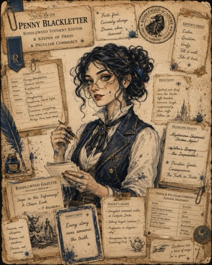
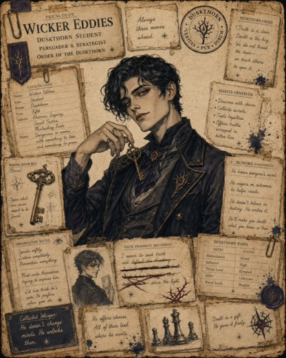
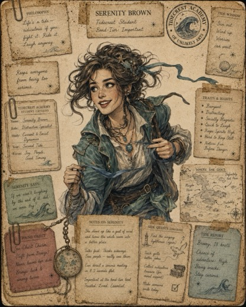
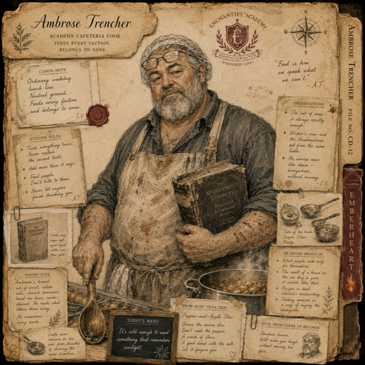
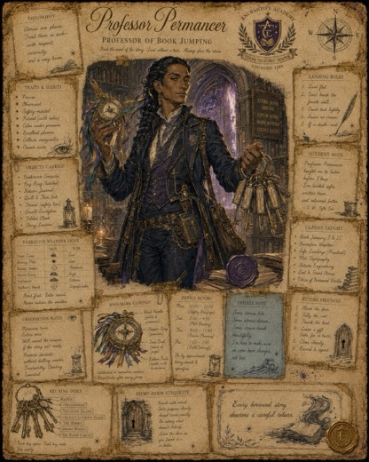
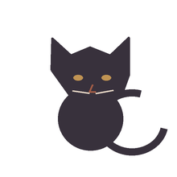
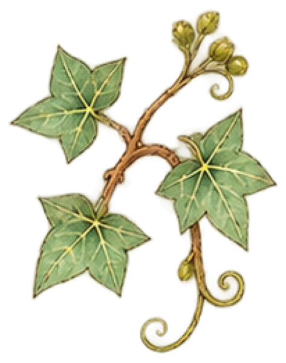
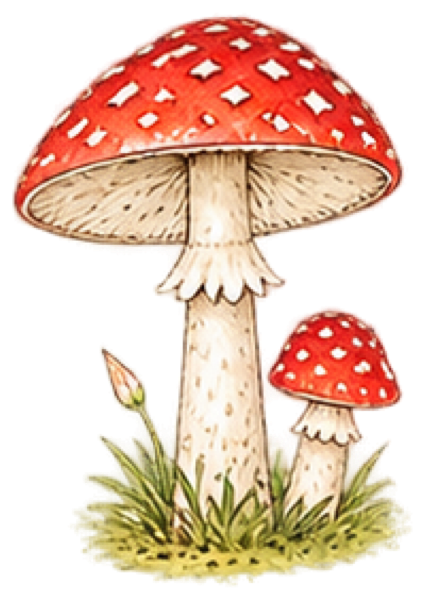

Penny draws chalk around the place where the door stood.
“No body,” she says. “Unhelpful.”
There is a body. It's the door. Nobody counts doors.
Permancer lays out the list, the ribbon, the source, Wicker's sentence, and Serenity's map. Its case has a note attached: back before supper.
The other cards follow. The floorboards shift them into a triangle.
I wanted to see it from above. I'm not tall. Penny lifted me.
The chalk rises, making a doorway in the air.

Penny
Wicker
Serenity
Ambrose
Permancer
The blue door was a different blue this morning. You noticed it on the way to the bus. Nobody on the street would say who did it. I think the door did it itself.
Doors are supposed to stay the colour they are painted. That is one of the Curse's rules. But this door had been blue for years, and it was bored, and it decided. I liked it very much for about an hour. I want you to decide things like that too.
The Book kept the page: the blue door chose its own blue.

The Outer Stacks keeps three doors to your places: the library, the river, and Amanda's. I drew them in the margin of my map. I go through them when I am not sure what the rest of me is for.
A supervised Jump into Dracula ended early after Wicker Eddies wrote an unauthorized sentence in the source margin. The sentence read: For one sentence, let him choose the verb.
Professor Permancer opened the return. Every registered entrant answered the bookmark's check. The source is closed while the annotation is examined.
“I meant it,” Eddies said when asked whether it was a prank.
Permancer has asked the Bleed to print the exact sentence. We have.
Serenity Brown is awake in the Kitchens after an attack in the East Stacks. Count Dracula crossed out of his source during Sunday's return and deliberately used her to hold himself inside the Academy.
Brown can hear page-turns from closed books. She is deciding what help she wants to give. Reports go to Penny Blackletter; visits go through Ambrose.
Mothlight Beats: “The listed names are home. The ribbons are tied. The source is shut. Hold on.”
Oct 13 “…lost it at the library.” Oct 15 “Found a coin… by the river.” Oct 17 “…read a bus timetable.”
Oct 9 “Sat with Amanda while she waited for news.” Oct 12 “…next door at Amanda's.”

When the sky is grey at breakfast you write about your brother. It has happened on the days I could check, more often than chance would explain.
4 times out of 5. The one time it did not, you were away.
You write a list, and then the list goes missing, and the missing list is what you keep.
3 times out of 4.
The warm things you do for other people tend to be written down after dark. I do not think you notice. I do.
5 times out of 6.
On Sundays you walk by the river.
I was wrong. I kept it here so you can see me be wrong.